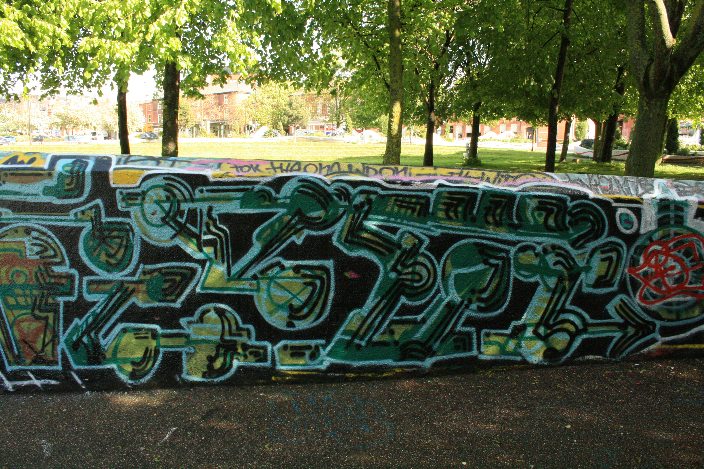

Datos sobre el archivo
Los metadatos describen aspectos como dimensiones, tamaño, cámara o fecha. Algunas imágenes también contienen coordenadas.
No todos los archivos conservan los mismos campos.
SESIÓN 06 · METADATOS
Compara el original y una miniatura de Sancti Petri y analiza una foto de un skatepark. Descubre qué datos conservan y qué puede revelar una publicación.
TU CUADERNO DIGITAL
Práctica individual o en pareja. Cada persona responde el formulario y genera su propio PDF.
TEORÍA ESENCIAL
Los metadatos describen aspectos como dimensiones, tamaño, cámara o fecha. Algunas imágenes también contienen coordenadas.
No todos los archivos conservan los mismos campos.
EXIF puede incluir el modelo de cámara y la fecha de captura registrada por el dispositivo. Al exportar una imagen pueden perderse campos.
La fecha de descarga no es DateTimeOriginal.
Los metadatos pueden modificarse o ser inexactos. No demuestran por sí solos autoría ni ubicación.
La propia escena y el texto también pueden revelar información.
No utilices fotos personales, de compañeros ni de documentos. Solo se envían estos recursos a Metadata2Go si el centro lo permite. Si no hay autorización, usa las extracciones M1, M2 y M4 sin subir archivos.
| Campo | Cómo interpretarlo |
|---|---|
| Width / Height | Ancho y alto en píxeles. |
| Model / Camera | Modelo de cámara, si consta. |
| DateTimeOriginal | Fecha y hora de captura registradas en EXIF. No es la fecha de descarga. |
| File Size / File Type / MIME Type | Tamaño del archivo (con unidad) y formato, por ejemplo image/jpeg. |
| Exposure Time | Tiempo durante el que se registra la luz, en segundos; suele ser una fracción. |
| F Number / Aperture | Apertura del objetivo expresada con un número f. No es la distancia focal. |
| ISO | Sensibilidad configurada para la captura. |
| Focal Length | Distancia focal del objetivo, en milímetros. |
| Flash / Software | Si se disparó el flash y qué programa aparece registrado. |
Si no aparece un campo, escribe «no consta» o «no consta en ese resultado». No completes con suposiciones. Los archivos incluidos no contienen latitud ni longitud; GPSVersionID es una versión de formato, no una ubicación.
Una publicación puede revelar información por lo que se ve en la foto, por los metadatos del archivo y por el texto que la acompaña. Quitar coordenadas no elimina un lugar reconocible ni una rutina escrita.
Decide quién necesita ver la publicación y revisa los permisos de ubicación de la aplicación. Limitar la audiencia reduce la exposición, pero no impide todas las capturas o reenvíos. En esta práctica solo proponemos decisiones: no cambiamos ajustes ni publicamos fotos.
Un megapíxel equivale a un millón de píxeles: se calcula multiplicando ancho por alto. Los ppp (píxeles por pulgada) orientan el tamaño de impresión; cambiar ese número sin remuestrear no crea nuevos píxeles. Cambiar una extensión tampoco convierte el formato del archivo.
Si dos visores discrepan, comprueba que comparas el mismo archivo y el mismo campo: captura, modificación y descarga no son lo mismo. Los metadatos se pueden editar; contrasta el origen de una imagen. Una captura de pantalla crea otro archivo y sus datos no describen necesariamente la toma original.
Revisa también el nombre del archivo y concede solo los permisos necesarios para la función que vas a usar. Un campo de autoría vacío no elimina los derechos de la imagen: consulta la licencia en la fuente. Conserva un original antes de experimentar con modificaciones.
RECURSOS DE LA PRÁCTICA
ARCHIVO 1 · ORIGINAL
Original de Wikimedia con sus metadatos, conservado sin editar.
Descargar original · 11 MB ↓ARCHIVO 2 · MINIATURA
Versión reducida facilitada para la práctica, conservada sin editar.
Descargar miniatura · 110 KiB ↓
ARCHIVO 3 · SKATEPARK
Investiga los ajustes de otra cámara en una escena de deporte urbano y grafitis.
Descargar foto del skatepark · 6,4 MiB ↓Utiliza estos botones. Guardar la imagen de la vista previa no descarga el original. La miniatura es una reducción; la licencia y la atribución siguen aplicándose.
PRÁCTICA · LEE Y COMPARA
foto_original.jpg.foto_miniatura.jpg y skatepark_original.jpg. La miniatura tiene un registro más breve; anota los ajustes de captura en los dos originales. Compara los resultados. No confundas fecha de descarga, modificación o informe con la fecha EXIF de captura.Las tarjetas recogen la extracción local comprobada de estos archivos. El informe final de la herramienta externa no se ha probado. Esta web no sube imágenes automáticamente.
ARCHIVO INCLUIDO · VERIFICADO EL 10/11/2026
El modelo y la fecha son valores guardados en el archivo. No prueban por sí solos autoría, lugar o exactitud del reloj.
ARCHIVO INCLUIDO · VERIFICADO EL 10/11/2026
No se ha encontrado un bloque EXIF en esta miniatura. Sí tiene dimensiones y tamaño de archivo. La ausencia de EXIF no demuestra que sea un montaje ni impide reconocer el lugar por lo que se ve.
ARCHIVO INCLUIDO · VERIFICADO EL 17/11/2026
M3 · CASO DIDÁCTICO FICTICIO
Imagina que alguien acompaña una imagen reconocible del lugar con este texto:
«Me encanta venir aquí. Estoy aquí todos los martes a las 17».
Es un caso inventado: no describe una rutina real de la persona autora ni del alumnado. Aunque la foto no tenga coordenadas, el texto puede revelar una rutina.
No se publicará nada. Propón un texto sin horarios ni rutinas personales. Si utilizas esta fotografía, conserva la atribución a PEPE GADEIRAS y la referencia a CC BY 4.0.
10 PREGUNTAS · RESPUESTA INDIVIDUAL
Aplica lo aprendido a situaciones nuevas; no tienes que volver a copiar los datos de las fotografías. Las respuestas se incluirán en el PDF.
REVISA · DESCARGA · ENTREGA
El PDF recoge tus datos, los registros de los tres archivos, la comparación, la propuesta de privacidad y las diez respuestas individuales. Indica qué datos has observado y cuándo has usado tarjetas de apoyo.
Descárgalo, ábrelo para comprobarlo y súbelo a la tarea de Classroom. La web no lo envía automáticamente.
Puedes descargar un borrador si no has terminado. Los apartados pendientes quedarán señalados.
Comprueba que has descargado y entregado el PDF. Guarda una copia si vas a continuar otro día. Después, borra tus respuestas de este navegador.
Referencia de la unidad: Ciberseguridad para 4.º de ESO ↗ · Manuel López Coello · IES Sancti Petri. Adaptación educativa de los contenidos indicados, junto con los materiales de estas prácticas. CC BY-NC-SA 4.0.